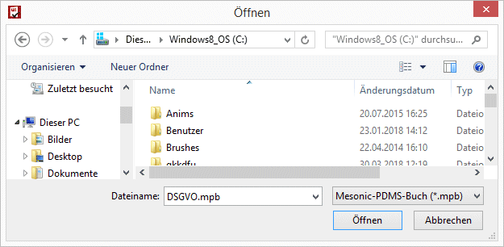
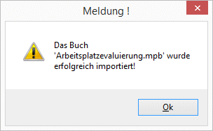
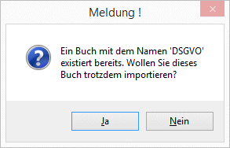

Mittels "Buch importieren" Button kann aus einer .mpb Datei ein komplettes Buch importiert werden.
Eine .mpb Datei enthält:
ü Buchstruktur (inkl. Kapitel und Subkapitel)
ü Vorlagen inklusive der enthaltenen Eigenschaften und Zusatzfeldern
ü Inhalt der Deckblätter
ü Uploads
Drückt man den "Buch importieren" Button, so öffnet sich das "Öffnen" Fenster und eine Datei mit .mpb Endung kann für den Import ausgewählt werden.

Nachdem der "Öffnen" Button gedrückt wurde, wird das Buch übernommen und eine Meldung ausgegeben:

Sollte ein Buch mit demselben Namen bereits vorhanden sein, so erfolgt eine Meldung, ob man das Buch trotzdem importieren möchte:

Wird diese mit "Ja" bestätigt erfolgt der Import und es ist dann ein weiteres Buch mit demselben Namen vorhanden.
Hinweise
Ø Benutzer und Benutzergruppen
Nach dem Import müssen dem Buch, den Kapiteln und Subkapiteln jene Benutzer und Benutzergruppen zugewiesen werden, die darauf Zugriff haben sollen. Nach dem Import hat nur jener Autor die Berechtigungen auf das zuvor importierte Buch, der den Import durchgeführt hat.
Ø Eigenschaften
Eigenschaften werden mit der nächsten freien Nummer importiert und sind im Eigenschaftenstamm sichtbar. Nach erfolgreichem Import, sollte der Eigenschaftenstamm kontrolliert werden und die Objektberechtigungen für die neuen Eigenschaften vergeben werden.
Ø Zusatzfelder
Zusatzfelder werden auch übernommen, die Zusatzfelddefinition im Zusatzfeldstamm wird dabei aber nicht verändert.
Ø Vorlagen
Vorlagen werden mit der nächsten freien Nummer importiert und sind im Vorlagenstamm der individuellen Formulare ersichtlich. Nach erfolgreichem Import, sollte der die Objektberechtigungen für die neue Vorlage vergeben werden.
Ø Berechtigungen
Die Berechtigungen für die Importieren Objekte (Vorlagen und Eigenschaften) werden nach dem Import für jenen Benutzer gesetzt, der den Import durchgeführt hat. Die Berechtigungen für weitere Benutzer müssen über die Objetkberechtigungen vergeben werden.